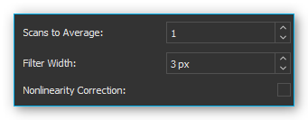
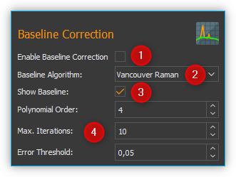
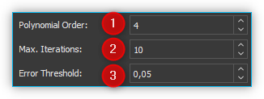
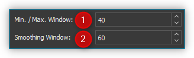
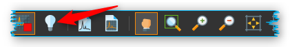
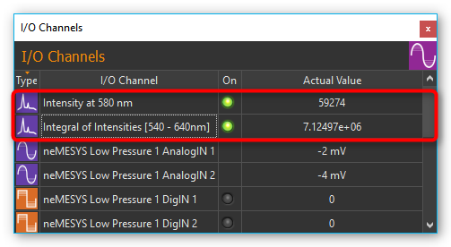

Spectroscopy Add-on
Installation
The spectroscopy plugin is not part of the standard installation package and must be installed as add-on. The versions of the spectroscopy plugin and the installed CETONI Elements software should match. For example, if you want to install the spectroscopy add-on version 20180520, you should have CETONI Elements version 20180520 installed.
Important
The version number of CETONI Elements and the spectroscopy plugin should match.
Please close all other programs before launching the installation.
Important
Install the spectroscopy plugin and the device driver before connecting your spectrometer to your PC through USB for the first time.
Launch CETONI_Elements_Spectroscopy_Setup_64bit.exe to begin
the installation. The installation assistant will guide you through the
installation of the software and hardware drivers.
Important
If you want to install the hardware drivers on a windows system, you need to be logged in as an administrator.
Important
During the installation you can also install the optional Analyze IQ add-on, for chemometric (quantitative and qualitative) analysis of recorded spectrums. For this add-on you will need a paid runtime license.
Introduction
Clicking the Spectroscopy button ❺ in the sidebar will take you to the Spectroscopy Plugin (see image below).

Toolbar
Tabs for the selection of a spectrometer display. Using the tabs you can switch between the displays and control elements of individual spectrometers. One tab is created for each spectrometer.
Spectrum live display
Parameter control elements
Spectroscopy button
Toolbar
|
Show/hide the sidebar with the spectrometer settings |
|
Start / Stop spectral data live display |
Record / Delete a background spectrum |
|
Start / Stop determination of integration time |
|
|
Create a spectrum analysis channel |
|
Load spectrometer settings from an *.aiq file |
|
Save spectral data in text format (.txt) or as Analyze IQ file (.aiq) |
|
Save spectral data in PNG image file or PDF document |
|
Panorama tool to move the spectrum live display |
|
Zoom area selection tool (enlargement) |
|
Scale x-axis to fit the visible screen area |
|
Scale y-axis to fit the visible screen area |
|
Scales both axes to fit the visible screen area |
{kind=link}
{kind=link}
Spectrum Live Display
The spectrum live display shows the current, last recorded spectrum following all processing steps.

The peak markers ❶ show the x and y coordinates of a determined spectrum peak. The line for the minimum peak intensity is shown in yellow ❷. Peaks below this line are not detected and marked. If you have activated the display of the calculated baseline in Baseline Correction, it is displayed as a red curve ❸. The x-axis ❺ shows the set unit (Wavelengths in this example). The y-axis ❹ shows the measured intensity in counts.
You can use the mouse wheel to zoom in and out of the spectrum display.
If the Panorama tool for moving the display area is activated, you can display the values of the spectrum at a certain position by moving the mouse pointer to the corresponding position over the curve ❻. A window with the values will appear. If you move the mouse pointer over the curve, the window follows the mouse pointer and the values inside are continuously updated.
Parameter Control Elements
Overview
The controls are used to set the parameters for acquisition and pre-processing of spectra. They are arranged in the order in which processing is carried out from top to bottom.

Spectrum Acquisition - contains all settings of the spectrometer for the acquisition of a spectrum
Baseline Correction - here you can set the parameters for real-time baseline correction
Peak Detection - you configure the parameters for automatic peak detection here
The Spectrum Live Display lets you see and evaluate the effects of parameter changes right away.
Spectra Acquisition
Overview of controls for spectra acquisition
In the Spectrum Acquisition area you will find all controls for setting the acquisition parameters.

Setting the Integration Time
The integration time correlates with the exposure time of the spectrometer’s CCD. It is the time period in which the detector can collect photons.

Enter the integration time into the input field ❶. Set the desired time unit in the selection field ❷. As the integration time increases, the spectrums intensity values go up as well, since the detector has more time to collect photons.
Tip
The recording duration of a spectrum increases along with the integration time.
If the recording duration is longer than 500 milliseconds, a progress bar is displayed below the control elements, showing you the progress of the current recording. If the product of integration time and scans to average is 10 seconds or greater, a warning message is displayed showing the future length of the integration time. You can then either confirm the current parameter settings or retain the original values.

Important
Any parameter changes are executed after ending the current spectrum recording operation. During long integration periods this may cause the impression that the software is no longer responsive.
Automatically determining Integration Time
If you click the button for automatic integration time determination in the toolbar, the software will attempt to control the integration time automatically in such way that the maximum intensity of the spectrum reaches 80% of the maximum sensor value (saturation).
You can stop the automatic integration time determination at any time by clicking the button again.
Pre-processing the Spectrum
Pre-processing live spectrums can contribute to an improved signal-to-noise ratio (SNR). This reduces interference, while improving spectrum quality. Spectral smoothing makes it possible to determine distinctive peaks. The removal of non-linearities and spectral baseline correction also helps improve quality.
Scans To Average
This is a time-based averaging feature. Time-based averaging increases the amount of spectral information captured by calculating the average outputs of individual pixels over multiple spectral scans. This process takes more time than viewing the results of one scan but produces a higher signal to noise ratio (SNR) and stabilizes fluctuating data. The SNR will increase by the square root of the number of time-based averages. For example, if 100 averages are used, the SNR will increase by a factor of 10, but the measurement will take 100 times as long to acquire than a single scan.
Filter Width
This is a spatial averaging feature, visually smoothing the spectrum. Spatially based averaging will visually smooth the results of a single scan by averaging the values of adjacent pixels together. This process improves the SNR at the expense of optical resolution. Spatial averaging is useful when the spectrum is relatively flat and little variation is expected between adjacent pixels, as the resultant loss of resolution can make it difficult to distinguish sharp spectral features. When using spatial averaging, the SNR will increase by the square root of the number pixels averaged.
For each pixel an average value is determined using neighboring pixel. The entered value defines the width of the filter in pixels on the left and right side of the current pixel (for example: filter width = 3: the average is derived from each data point and its 3 neighboring values to the left and to the right).
Nonlinearity Correction
This feature corrects the non-linearity between the photon stream and the CCD sensor’s output signal.
Selecting the X-Axis Unit

You can choose from various units for the x-axis:
Unit |
Meaning |
|---|---|
Wavelengths [nm] |
Wavelength of x-axis in nanometers |
Pixels [px] |
Each pixel value corresponds with a CCD sensor element Starting at 0, ending at n-1 (n = maximum number of sensor elements) |
Wavelengths [µm] |
Wavelength of x-axis in micrometers |
Frequency [GHz] |
X-axis frequency in Gigahertz (GHz) |
Wave numbers [1/cm] |
X-axis in inverse centimeters (1/cm) |
Raman shift [Raman] |
X-axis in 1/cm – depending on the excitation wavelength of the laser |
Baseline Correction
Overview of baseline correction controls
In the Baseline Correction section you will find all settings for real-time baseline correction:
Baseline variation is a problem that occurs with many types of spectral data. Typically, it is a linear or nonlinear addition to the spectra that results in expected zero measurements reaching a positive value. This can be caused, for example, by the fluorescence during the recording of Raman spectra. A baseline can be described as the slowly varying curve that runs through the lower part of the spectra without the jumps of the peaks.
During baseline correction, a baseline is calculated by the selected algorithm. This is then subtracted from the recorded spectrum to correct its baseline variation.
Use the Enable Baseline Correction ❶ check box to activate or deactivate baseline correction. In the Baseline Algorithm ❷ selection list, select the algorithm for calculating the baseline. Using the Show Baseline ❸ check box, you can select whether the calculated baseline is displayed in the Live Spectrum Display or not. Even if baseline correction is switched off, you can display the calculated baseline to visually check its quality (see figure below).

In the area below ❹ you will find the settings for the selected baseline algorithm ❷.
Baseline Algorithms
Vancouver Raman AlgorithM
The Vancouver Raman algorithm has been developed for automated background removal of autofluorescence in the field of biomedical Raman spectroscopy (see Zhao, J., Lui, H., McLean, D. I., & Zeng, H. (2007). Automated Autofluorescence Background Subtraction Algorithm for Biomedical Raman Spectroscopy. Applied Spectroscopy, 61(11), 1225-1232). It is based on a modified multi-polynomial fitting, with the addition of a peak-removal procedure during the first iteration, and a statistical method to account for signal noise effects.
You can set the following parameters for this algorithm:
Polynomial Order – Sets the order of the polynomial for the polynomial fit. Based on empirical experience, fourth to sixth-order polynomials provide the best fluorescence approximations.
Max. Iterations – Limits the maximum number of iterations for baseline calculation. This means that even if the error is still above the threshold value, the calculation is terminated after the maximum number of iterations.
Error Threshold – Defines the threshold value for the maximum error as a stop criterion. If the value falls below the threshold value, the calculation is terminated. For 0.95% confidence use 0.05.
Rolling Ball Algorithm
Kneen and Annegarn (see M. Kneen and H. Annegarn, Nucl. Instrum. Methods Phys. Res. 82, 59 (1996)) have described a baseline removal algorithm where one imagines a large ball rolling on the underside of the spectrum. The baseline is simply the trace of the topmost point of the ball. The original algorithm was made for X-ray spectra. In three loops the algorithm finds minimum points in local windows, finds maximum points among the minimum points, and smooths by averaging over the maximum points.
You can set the following parameters for this algorithm:
Min. / Max. Window – Size of the local windows to calculate the minimum and maximum points to identify the baseline.
Smoothing Window– Width of local windows for smoothing
Peak-Detection
Overview of peak detection settings
The peaks of a spectrum can be viewed as its “unique fingerprint”. A substance or mixture of substances can be identified by the horizontal position of its peaks. In addition, the intensity of main and side peaks can be used as an indication of the various concentrations of substances within a mixture. The following functions allow you to mark and select peaks.

Find Peaks – Toggles peak detection on or off
Min. Peak Distance – Minimum distance (in x-direction) between two peak markers
Show peak threshold -Shows the peak detection threshold as a yellow broken line in the spectrum display
Peak Threshold – Peak detection threshold – peaks are only marked if they are above the set threshold
Tip
Since the entered minimal peak distance is not transferred to the plot at 100% accuracy, feel free to tweak the value to achieve an optimum result.
Tip
An excessive number of peak markings can affect your PC’s computing power. Therefore, only a limited number of peaks is displayed.

Application example: a peak is not marked if it is located below the minimum peak intensity line ❶. If the peak is located above the line ❷, the marking is displayed. The last peak remains unmarked ❸ since the distance to its predecessor is smaller than the minimum peak distance.
Tip
If an excessive number of peak markings affects your PC’s computing power, reduce the number of peak markings. Increase the minimum distance and minimum peak intensity or smoothen the spectrum.
Removing Dark Spectrum / Background Spectrum
Dark spectrum is the expected signal level in the absence of light. Background spectrum is the expected signal level in the absence of a sample. By deducting the dark / background spectrum from the currently recorded spectrum, stray light influences and sensor noise of the resulting spectrum are reduced.
Start by setting the parameters in the same way you would in your measurements. Deactivate your light or laser source and record the background spectrum by clicking on the bulb icon.
Now, the same background spectrum is deducted from each newly recorded spectrum automatically.
If you are not satisfied with the result, click on the bulb icon with the red cross. This removes the background spectrum and lets you repeat the recording of the background spectrum.
Saving Spectrum Data and Spectrometer Settings

Save your spectrum data as a text file by clicking the
respective symbol in the toolbar. You can save the recorded spectrum as
a text file *.txt or as an Analyze IQ file *.aiq. The advantage of
text files is that they can be opened easily in spreadsheet applications
like Excel. The advantage of Analyze IQ files is that they also contain
meta data on the recorded spectral data, such as the creation date,
units for x and y-axis, the user name and all current spectroscope
settings. If you want to use the Analyze IQ add-on for qualitative and
quantitative analysis at a later point in time, you should save your
spectrums as an Analyze IQ file.
Tip
If you want to use the Analyze IQ add-on
later for qualitative and quantitative analysis, you
should save your spectra as Analyze IQ file *.aiq.
A dialog window will open in which you can select the file name and file format.

The directory of the current project is used as a target directory. However, you can also select a different directory in the dialog window.
If you have selected the *.aiq format as file format, a dialog for
adding metadata is now displayed.

Here you can add additional information
such as sample name or sample quantity to the *.aiq file by clicking
Add Meta Data. After clicking Add Meta Data, the input
window for selecting the metadata name and entering the value appears.

Use the Meta Data ❶ check box
to either select a predefined metadata field or to define a new custom
metadata field. You can define a new field by entering a name that is
not in the list, for example, Concentration. The predefined metadata
fields are defined in the file format for *.aiq files and are partially
displayed in the external Analyze IQ software.
Once you have selected the metadata field, enter the value for the metadata in the Value ❷ field and click OK to complete the input.
If you want to delete a metadata field from the list, select it and click the Remove Meta Data button. As soon as you click OK, the last recorded spectrum together with the current spectrometer settings and the metadata is saved in a file with the extension aiq.
Tip
If you save files in AIQ format, you can convert them to CSV format at any time later using the Converting Analyze IQ files to CSV feature.
Loading Spectrometer Settings

All spectrometer settings can be loaded from previously saved
.aiq files. Click on the icon for loading spectrometer settings *.aiq
and select an *.aiq file.
Saving a Spectrum Image

By clicking the respective button in the toolbar you can save the current image of the spectrum live display as a PNG file or a vector graphic in the form of a PDF-document.
In the file dialog coming up you can select whether you want to save a PNG-image or a PDF-document ❶. The image directory of the current project is used as a target directory. However, you can also select a different directory in the dialog.

Click on the save button ❷ to save the image.
Converting Analyze IQ files to CSV
If you have saved your spectral data in Analyze IQ format *.aiq, you can
convert them to CVS format at any time later. In the main menu you will
find the menu item .
Click on this menu item, select the Analyze IQ file and the software saves the
file as a CSV file with the same file name and the file extension *.txt.

Loading and displaying spectral data with the Spectra Viewer
The Spectra Viewer provides you with a tool for opening and viewing
stored spectral data in Analyze IQ format *.aiq or in CSV format
*.txt. To open the Spectra Viewer, select
from the main menu.
Alternatively, you can open the Spectra Viewer via the Spectroscopy
button in the sidebar.

In the toolbar ❶ at the top you will find the individual functions of the Spectra Viewer. The functions are essentially the same as in the Spectrum Live Display. By right-clicking with the mouse into the Viewer, you can open the context menu with all functions.
Click the Load Spectra Data button to open spectrum files. In the file selection dialog that appears, you can select one or multiple files. The selected files will then be displayed in the Spectra Viewer.
Just like in the Spectrum Live Display, you can also move the mouse over a curve to display the value of the curve at the corresponding position ❷.
If you want to load additional spectra, simply click the Load Spectra Data button again. The new spectra will then be added to the existing spectra in the viewer.

Click the Clear Viewer button to delete all curves in the Spectra Viewer.

The Export Plot Image button allows you to export the current image in the Spectra Viewer as a PDF or image file.
Realtime Analysis using Analysis Channels
Introduction to Realtime Analysis
Analysis channels let you analyze recorded spectral data online and integrate the results into QmixElements script programing. This gives you a powerful tool to analyze spectral data online and use the results to control other devices or trigger specific events.
For each analysis an “analog” input channel is created in the I/O channel list (see image below). Like any other analog channel, these input channels can be evaluated and integrated into the script system.
To create an analysis channel click on the Create Spectrum Analysis Channel button in the toolbar.

A dialog will be displayed that lets you select the analysis function:

After you configured the analysis function an analysis channel is inserted into the I/O channel list. You can find details regarding the available analysis functions in the following sections.
Tip
You can create any number of analysis channels for a spectrometer. This allows you to measure the intensity at a certain wavelength, for example, or determine the intensity of the overall signal by integrating all values.
Clicking the green LED in the ON-column (see image below) lets you activate or deactivate the respective online analysis at any time. If you want to change the configuration of an analysis channel or delete the channel, perform a right mouse click on the channel to display the context menu (see image below). Then select the desired action from the context menu.

Spectrum Integration
The integration function lets you measure the intensity of spectral data within a certain bandwidth or the intensity of the signal at a certain wavelength. Begin by setting the bandwidth in the configuration dialog ❶ in which the signal should be integrated. If you want to measure the intensity at a specific wavelength, enter the same values for Start Range and End Range.

Click on the Apply button to accept the values. The software will correct the entered values to the nearest values supported by the spectrometer. In the current analysis display ❸ you can see the effects caused by the modified values immediately. If you click on OK, the set values are applied and a new analysis channel is created or the currently selected channel updated.
Chemometric Analysis
Chemometric analysis allows the quantitative and qualitative determination of concentrations of individual substances in a mixture of substances. You will need a paid license for the Analyze IQ realtime add-on to be able to use this function.
In this function’s configuration dialog you simply have to select an existing Analyze IQ model, which you want to use for spectral analysis (see image below).
On the left side you will find a list of all existing models ❶. On the right side you will see additional details for the model you selected on the left. For example, you are shown which substance ❷ is being analyzed, whether it’s a quantitative or qualitative analysis ❸ as well as a short description of the selected model ❹.
Once you selected a model, an analysis channel is created. In case of a quantitative analysis the channel shows you the substance concentration in a range from 0 – 100% (see image below). If you run a qualitative analysis the channel shows you the presence or absence of a substance in a substance mixture using the value 0 (absent) or 1 (present).

Spectroscopy Script Functions
The spectroscopy plugin contains various script functions for script-controlled spectrum recording.

Write Spectrum File
{kind=link}
This function lets you write the current spectrum to a text
file *.txt or Analyze IQ file *.aiq. First, select the
spectrometer you want to use in the configuration
section ❶.
Then select
the file name and file type (*.txt or *.aiq) to save the files under.
You have several options for this:
- Selection via file dialog:
Click on the file folder icon ❷ and select the target directory as well as the file name and file type.
- Enter an absolute file path:
Enter an absolute file path, e.g.
C:tempMySpectrum.aiq, using the keyboard.- Entering a relative file path
Enter a relative file path, e.g.
.DataMySpectrum.aiqusing the keyboard. In this case, theMySpectrum.aiqfile is saved in the current project directory in the Data subfolder. If the current project for example folder isC:/Users/Public/Documents/QmixElements/Projects/QmixLambda, then the following file would be created:C:/Users/Public/Documents/QmixElements/Projects/QmixLambda/Data/MySpectrum.aiq- Using a script variable
You can save an absolute or relative file path in a script variable and then use this variable in the input field.
When you run the function the current time stamp will be added to the
file name. In this way a file with a new and unique file name is created
every time the function in launched. For example, a file called
Spectrum.aiq will be saved under the following file name:
Spectrum_20161223_135552_545.aiq
In addition to spectral data you can also save metadata regarding the measurement, the sample or the device as part of the file ❸.
Important
Metadata are saved only if you select the Analyze IQ format *.aiq.
Click on the Add Meta Data button to add a meta data field. Now select the meta data field in the dialog box ❶ and then go to the entry field ❷ and enter the value you want to assign to the meta data field.

You can also use simple script variables as a value for a meta data field. They will be evaluated when the script runs and the value of the script variables stored in the respective meta data field (see image below).

Analyze IQ Add-on
Introduction to Analyze IQ Add-on
The Analyze IQ add-on allows you to integrate powerful chemometric analysis functions of Analyze IQ into the QmixElements software.
In practical applications the analysis of substance mixtures or mixed liquids leads to spectral data peaks which can overlap. This may lead to non-linear relationships between spectral responses of the various substances.
Analyze IQ offers a new, model-based paradigm for spectral analysis:
Create a series of known substance mixtures / material compositions
Record spectral data of these substance mixtures
Choose from a broad spectrum of chemometric analysis methods to build analytical models that summarize all spectral data in a compact format.
Unknown mixtures can be analyzed quickly and precisely using these analytical models.
This paradigm offers a number of advantages:
it separates model building from model use
expert knowledge for the analysis of spectral data can be packaged in models and passed on to users
Chemometric models can be created conveniently using the Analyze IQ Lab graphical user interface (see image below).

The models can then also be used by non-experts to turn data into results and decisions quickly. Through an interface to Analyze IQ RealTime this analysis function is integrated into QmixElements. Through analysis channels it can be used for realtime analysis of substance mixtures.
Importing License Data
To be able to use the Analyze
IQ add-on you will need a valid license file. You will receive this
license file *.ail from CETONI when you order the Analyze IQ add-on.
To import the license file select the menu item
.
After you imported the license file the Analyze IQ RealTime server is launched and the CETONI Elements software connects itself to the analysis server.

Generating Spectral Data for Model Building
The software can store spectral data in aiq file format, greatly simplifying model building in Analyze IQ software. For the modelling of classification models (substance present yes/no) or quantification models (concentration of a substance in percent), the information whether a certain substance is contained or in which concentration it is contained must be assigned to each spectrum recorded. This task can be solved perfectly by using the metadata fields of the aiq file format.
You can save the concentration of a substance in the metadata both for manual storage and for script-controlled storage of spectral data. Use the same metadata field, e.g. concentration, for all spectra from which you want to create an analysis model. If you create script-controlled mixtures, you can automate the storage of the spectral data together with the corresponding concentration value by using variables (see figure below).

All spectra that you want to use for building a certain model should be saved in the same directory.
Important
Create a separate directory for each analysis model and then use it to store all spectra that you want to use for building this specific model.
Preparing the Dataset
In the Analyze IQ User Manuel you will find the section Preparing the Dataset. The subheading Import from Multiple Spectrum Files describes how you can create a model from several individual spectrum files in a folder. Analyze IQ creates a CSV file in which the spectrum is assigned to the concentration value.

For each spectrum in the folder, a line is created in the CSV file in which the user manually enters the concentration value in percent (quantification model) or the presence of a substance (classification model) as “Yes” or “No” selection (see figure).
This time-consuming process can be done in CETONI Elements with just a few mouse clicks. To create a data set, select from the main menu.

A dialog is now displayed for preparation of the data set for an analysis model. In the Folder Containing Spectra ❶ field, select the folder containing the spectra. In the Value Metadata ❷ field, enter or select the name of the metadata field in which you wrote the concentration value when saving the spectra.

Then click on the Refresh button ❸ with the green arrow symbol to automatically read in the concentration values from all spectra and to update the column Concentration ❹ with these values.
Tip
If the expected values are not read in but all fields in the Concentration column remain at the value 0, then please check whether you have selected the correct metadata field or whether you have a typing error in the name of the metadata field.
Whenever you change the entry in the metadata field, you should re-read the values using the Refresh button.
Then click the Write Quantification File ❺ button if you want to create a quantification model, or click the Write Classification File ❻ button to create a classification model. When you click one of the buttons, a file dialog opens for you to enter the file name. The dialog opens in the folder containing the spectra. Enter the file name to save the dataset as a CSV file.
The CSV file for a classification model contains a line with two entries for each spectral file. The entry in the first column contains the file name of the spectral file. The second column contains the text “Yes” or “No”, indicating the presence or absence of the target substance in the sample corresponding to that row.

The following rules are used to generate the entries:
Value from metadata field = 0 → No
Value from metadata field ≠ 0 → Yes
You should take this into account when saving the metadata. If you use a quantification model, the concentration values are written directly to the CSV file. That means, the second column contains a value from 0 to 100 (inclusive), which indicates the percentage concentration of the target substance in the sample corresponding to that row (see figure below).

Import spectra into Analyze IQ
When you create a new analysis model in Analyze IQ, all you need to do is to import the recorded spectra and the created CSV file, and you are ready to start modeling immediately:
To do this, click on the item Import from Multiple Spectrum File ❶ in the Analyze IQ software. Then select the folder containing the spectra ❷ and select the CSV dataset file ❸ that you have previously created with the QmixElements software. Then click Next ❹ to import all data.
After the data import, you can start modeling, which is described in detail in the Analyze IQ User Manual (see figure below).
At the end of
modeling, you will get a complete analysis model *.aiqm, which you can
then use again in the CETONI Elements software for automatic analyses. The
following section explains how this works.
Importing Analysis Models
You will need completed analysis models to perform chemometric analyses.
These models (*.aiqm files) must be imported through CETONI Elements in
order to be added to the Analyze IQ RealTime server. To import these
model files go to .
After the importing process the Analyze IQ RealTime Server is restarted and the imported model is ready for your analyses.
Tip
To create analysis models yourself you will need the Analyze IQ Lab software from Analyze IQ, which is not part of the Analyze IQ add-on.
Important
The analysis models need to have been image100 created for the respective spectrometer, i.e. the analysis models need to have been created with spectral data recorded by the same spectrometer or type of spectrometer as the spectrometer used for the current spectral data recording.